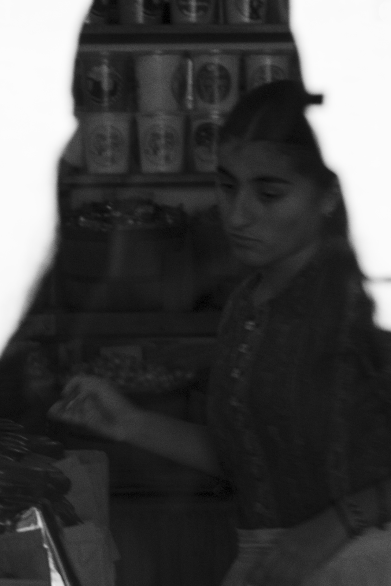
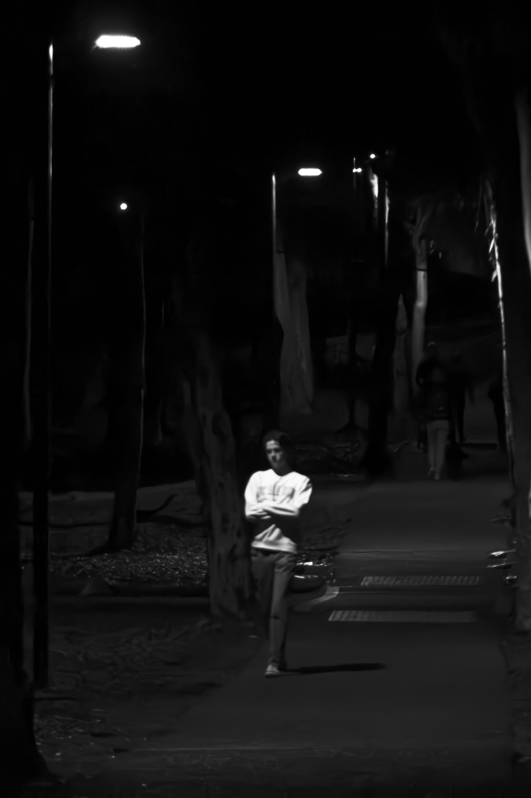
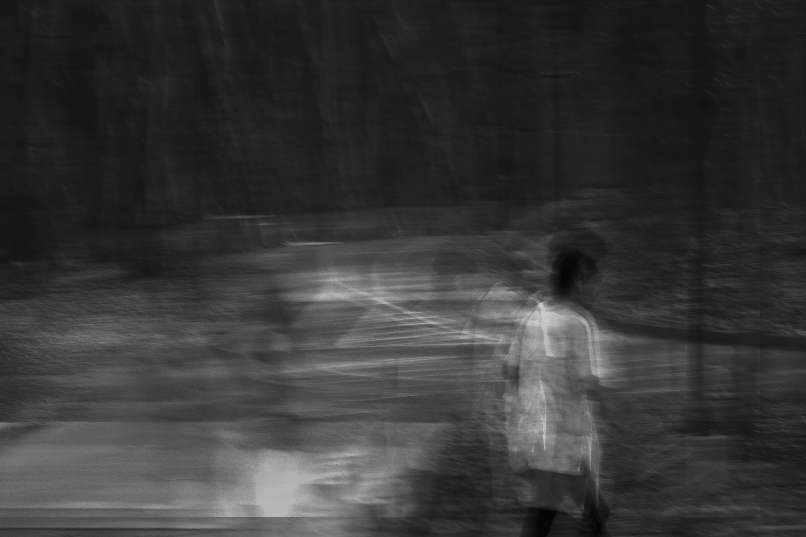
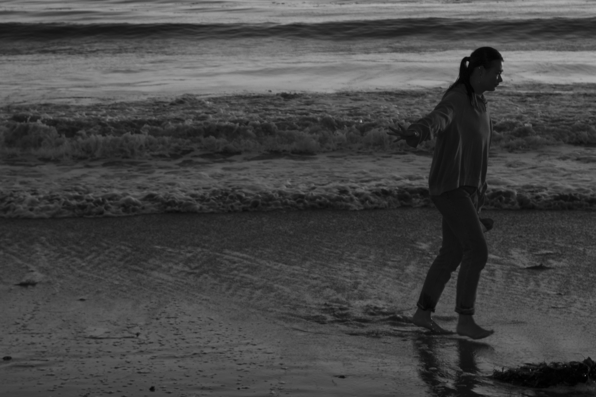
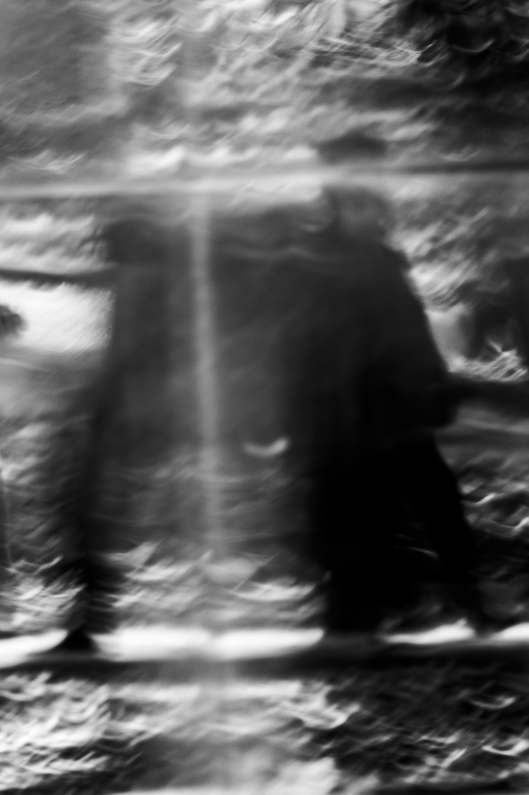
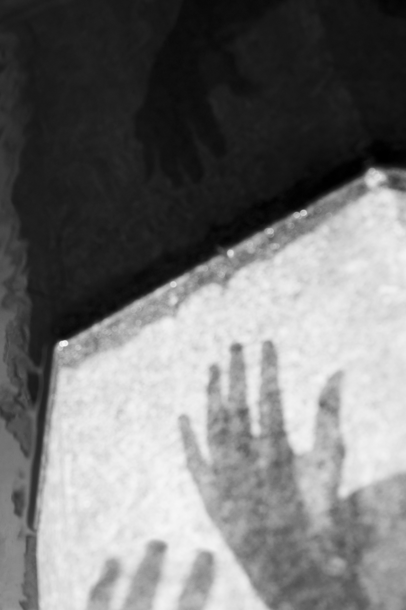
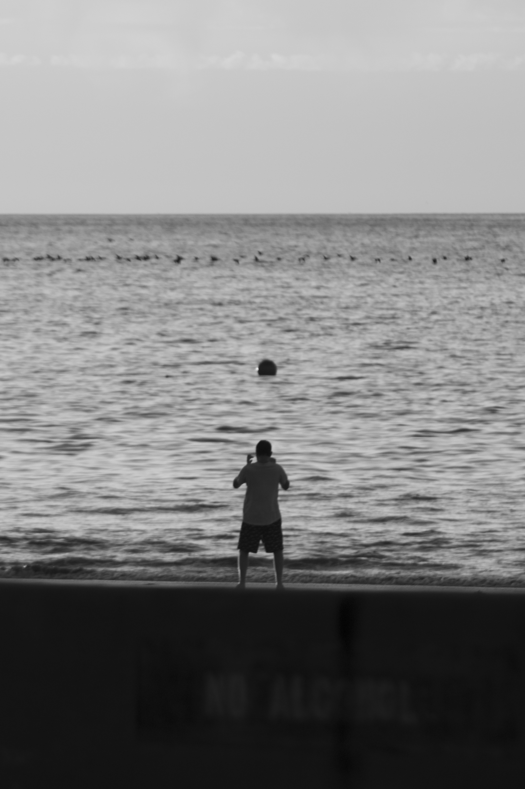
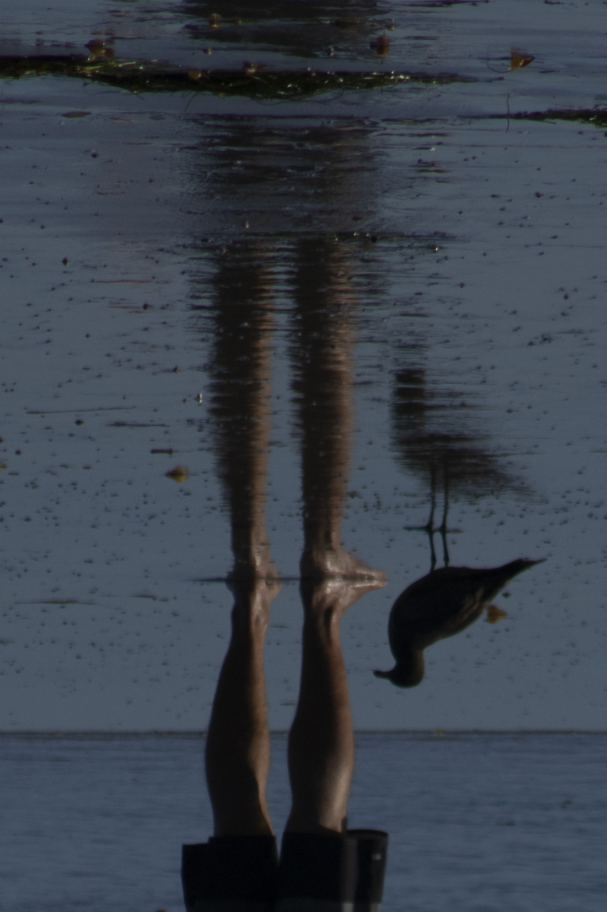

Hidden Distress, 2023

The Perceived Sorrow, 2023

Lost of Concentration, 2023

Stay away…, 2023
Interior Warning, 2023

Competing Tensions, 2023

Help, 2023

SCREAM, 2023
Self Isolation, 2023

Who Am I?, 2023
Chaotic Mind, 2023
Miserable, 2023